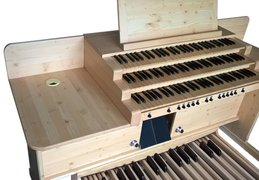
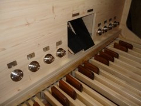
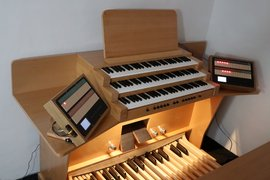
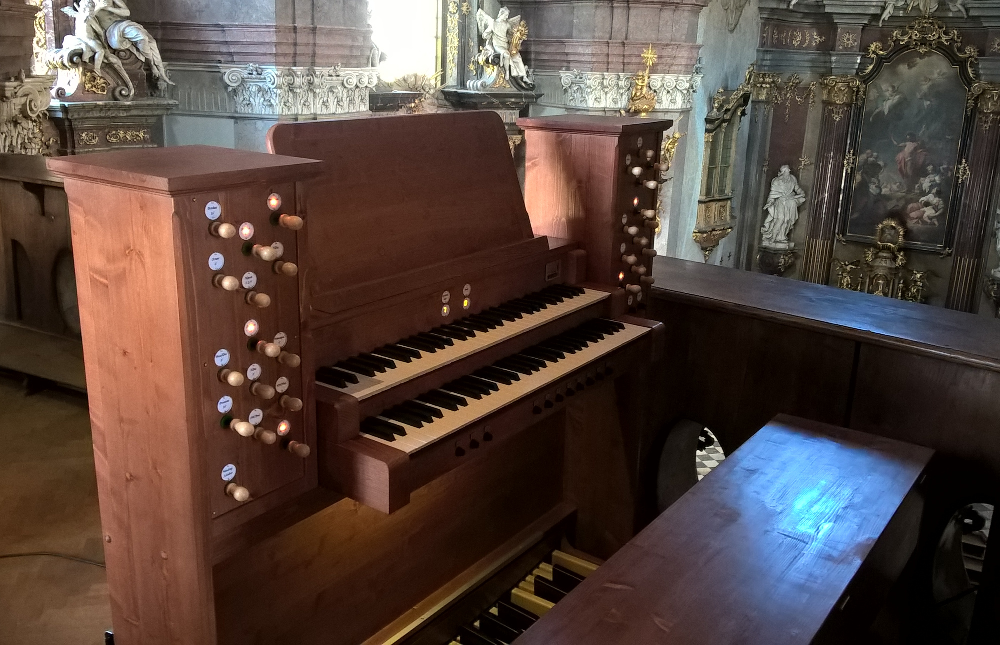
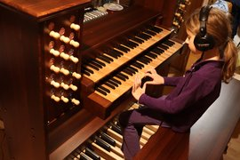

Orgeln
Wir fertigen komplette digitale Orgeln sowie einzelne Komponenten für den Bau von MIDI-Spieltischen (Tische, Pedalboards und Manualstapel). Die Konstruktion ist modular aufgebaut, sodass der gesamte Spieltisch einfach zerlegt und problemlos transportiert werden kann. Gleichzeitig kann die Ausstattung jedes Instruments nach individuellen Anforderungen angepasst werden. Wir fertigen Instrumente auf Bestellung und können problemlos auf spezielle Wünsche hinsichtlich künstlerischer, materieller und technischer Lösungen eingehen — einschließlich kundenspezifischer MIDI-Elektronik und MIDI-Platinen für Ihr spezifisches Projekt.
Zur Klangerzeugung verwenden wir ausschließlich die sogenannte Sampling-Technologie. In der Praxis funktioniert dies, indem Klangaufnahmen (mehrere Sekunden lange Samples) aller Pfeifen bestimmter realer Pfeifenorgeln aufgezeichnet werden. Diese Samples werden dann mit spezialisierter Software in Echtzeit entsprechend der eingehenden MIDI-Signale vom Spieltisch abgespielt. Der Spieltisch wird über MIDI mit einem PC verbunden und der Klang mit einem speziellen Programm (Hauptwerk, Swellinq, GrandOrgue) erzeugt. Für einen angemessenen Preis wird höchste Klangqualität gewährleistet. Da die aufgenommenen Klänge einzelner Pfeifen realer Orgeln abgespielt werden, ist der resultierende Klang sehr authentisch. Dies ist der Hauptunterschied zu gewöhnlichen digitalen Orgeln praktisch aller Weltmarken, unabhängig vom Preis. Heutzutage ist dies eine beliebte und erschwingliche Methode nicht nur für das Orgelüben zu Hause, sondern auch für professionelle Installationen, zum Beispiel in Kirchen.
    